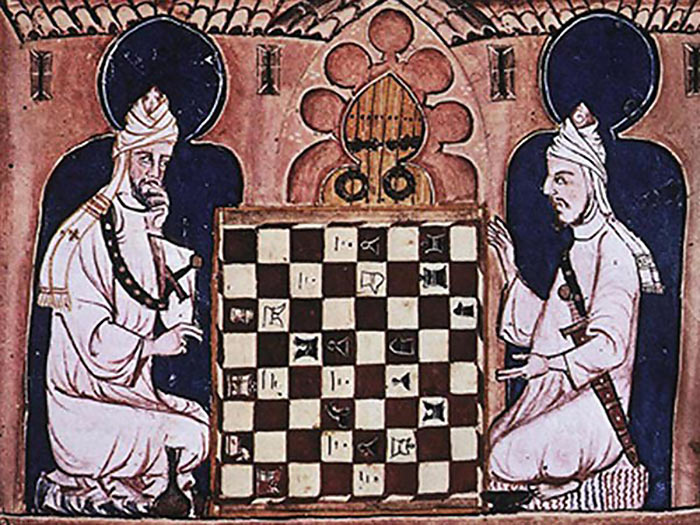
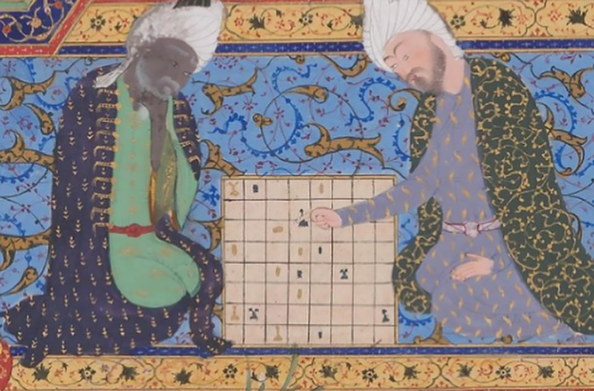
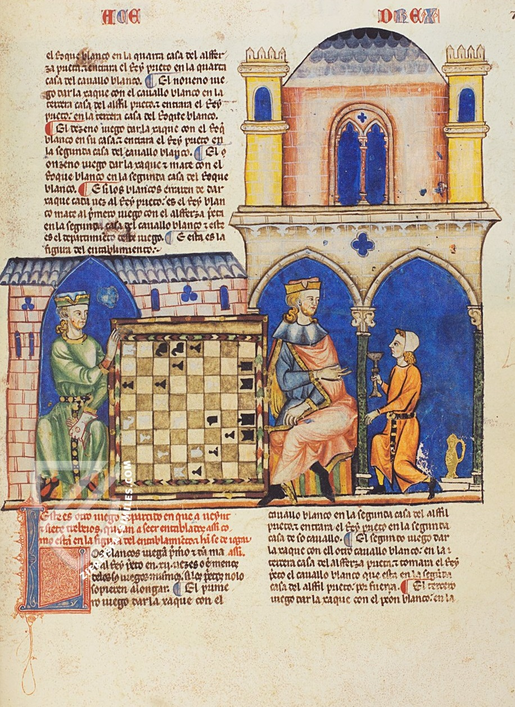
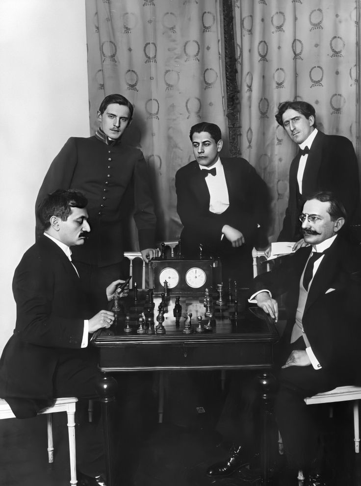
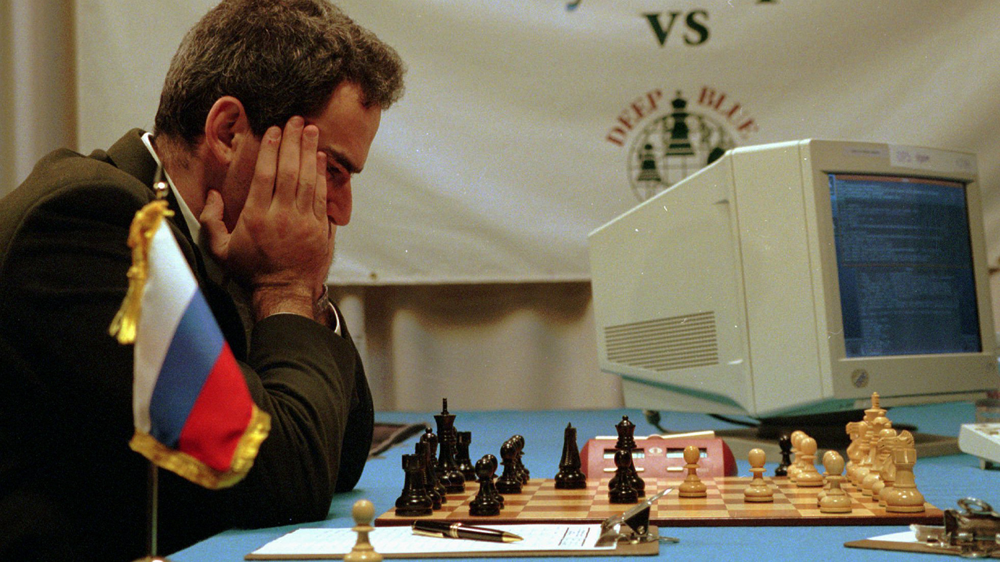
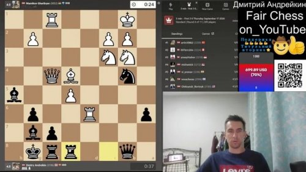

История шахмат: коротко о главном
Полторы тысячи лет за пять минут — и ссылки на подробные статьи.
Введение
Шахматы старше большинства современных государств. Они родились в Индии полторы тысячи лет назад, прошли через Персию и арабский мир, прижились в Европе и дожили до эры искусственного интеллекта. Ниже — сжатая версия истории. А если захочется копнуть глубже — каждая эпоха вынесена в отдельную статью.
Краткий обзор
1. Рождение игры (VI век, Индия)
Шахматы старше большинства современных государств. Они родились в Индии полторы тысячи лет назад, прошли через Персию и арабский мир, прижились в Европе и дожили до эры искусственного интеллекта. За это время игра менялась до неузнаваемости: исчезали одни фигуры, появлялись другие, менялись правила, число игроков и даже смысл победы. Неизменным оставалось одно — борьба умов на доске 8×8.

📖 Подробнее: Чатуранга: как всё начиналось
2. Персия и арабский мир (VII–X века)
Из Индии игра попала в Персию, где получила название шатрандж. Здесь произошли ключевые перемены: игроков стало двое вместо четырёх, а победа всё чаще достигалась матом, а не уничтожением армии. Именно в Персии появилось слово «шах» — нападение на короля. От него произошли и «шахматы» (шах + мат, «король мёртв»), и английское «check». Арабы принесли игру в Северную Африку, Испанию и на Сицилию, а вместе с ней — первые книги о шахматах и задачи-мансубы.

📖 Подробнее: Шатрандж: Персия и арабский мир
3. Европа меняет правила (X–XV века)
В Европе шахматы стали игрой знати и частью рыцарского воспитания. Церковь сначала относилась к ним настороженно, но со временем признала полезными для ума. Главное же произошло в конце XV века — «великая реформа». Ферзь из слабой фигуры, ходившей на одну клетку, превратился в самую сильную на доске. Слон получил ход по диагонали на любое расстояние, появились рокировка и взятие на проходе. Так родились «шахматы королевы» — игра, в которую мы играем сегодня.

📖 Подробнее: Шахматы в Европе: великая реформа XV века
4. Эпоха чемпионов (1886–1990-е)
В 1886 году Вильгельм Стейниц победил Иоганна Цукерторта и стал первым официальным чемпионом мира. С этого момента началась эпоха великих матчей. Ласкер удерживал титул 27 лет — рекорд, не побитый до сих пор. Капабланка почти не проигрывал. Алехин умер непобеждённым. Фишер в 1972 году обыграл Спасского в разгар холодной войны, а потом отказался защищать титул. Карпов и Каспаров* провели одно из величайших противостояний в истории спорта. Каждый из них менял представление о том, как нужно играть в шахматы.

📖 Подробнее: Эпоха чемпионов: от Стейница до Каспарова*
5. Машины против людей (1997)
Компьютер IBM Deep Blue обыграл Гарри Каспарова* в матче из шести партий со счётом 3½ : 2½. Это был переломный момент: машины перестали быть просто помощниками и стали соперниками. Каспаров* требовал показать логи матча, подозревая жульничество, но IBM отказалась и разобрала суперкомпьютер. Сегодня движки вроде Stockfish и Leela Chess Zero играют сильнее любого человека в истории — на 600 пунктов рейтинга Эло выше сильнейших гроссмейстеров. Шахматы стали глубже, но человек перестал быть лучшим игроком в свою же игру.

📖 Подробнее: Человек против машины: как компьютеры обыграли шахматистов
6. Наши дни (XXI век)
Интернет сделал шахматы доступными каждому. Платформы lichess.org и Chess.com насчитывают десятки миллионов пользователей, а играть можно в метро, на перемене или в очереди. В 2020 году пандемия и сериал «Ход королевы» вызвали настоящий бум: продажи шахматных наборов выросли на 1000%, а регистрации на платформах — в разы. Появились онлайн-турниры с призовыми фондами в миллионы долларов, шахматные стримы и даже киберспортивные лиги. Шахматы — одна из немногих игр, которая не потеряла популярность за полторы тысячи лет, а только укрепила её.

📖 Подробнее: Онлайн-эра: шахматы в XXI веке
Хочешь узнать подробнее?
📖 Чатуранга: как всё начиналось
📖 Шатрандж: Персия и арабский мир
📖 Шахматы в Европе: великая реформа XV века
📖 Эпоха чемпионов: от Стейница до Каспарова*
📖 Человек против машины: как компьютеры обыграли шахматистов
📖 Онлайн-эра: шахматы в XXI веке
* Примечание: Нам необъходимо выполнить требование российского законодательства: Гарри Каспаров* после завершения спортивной карьеры занимается политической деятельностью. Внесен Минюстом РФ в реестр иностранных агентов, а Росфинмониторингом — в перечень террористов и экстремистов.